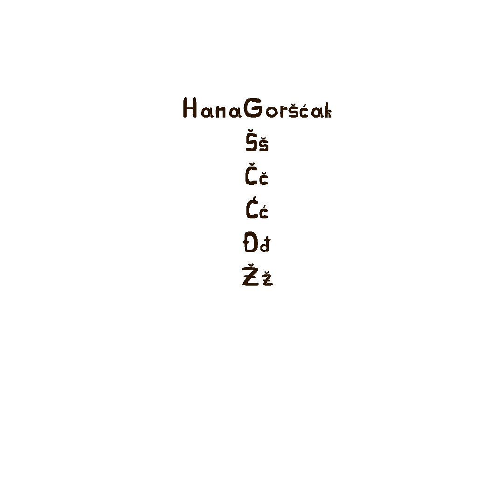
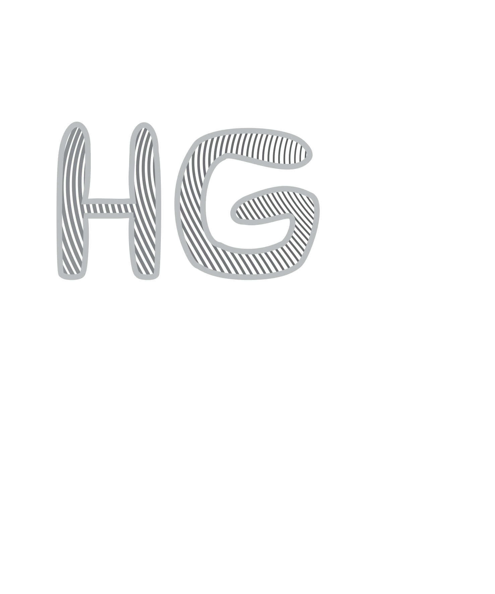
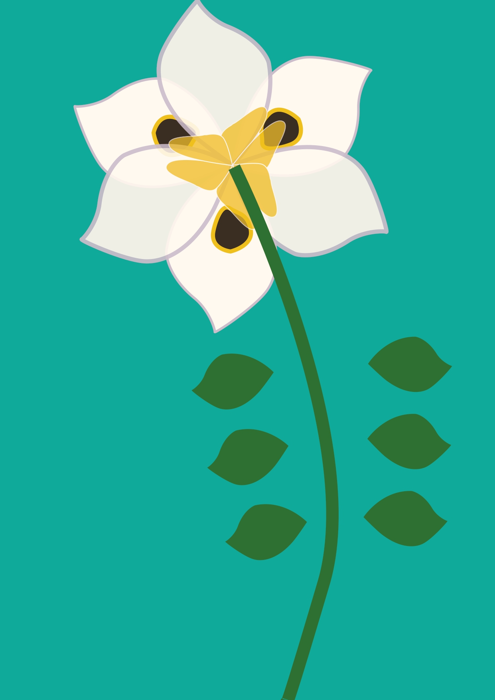
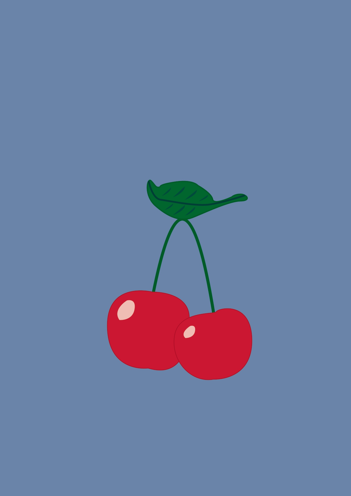
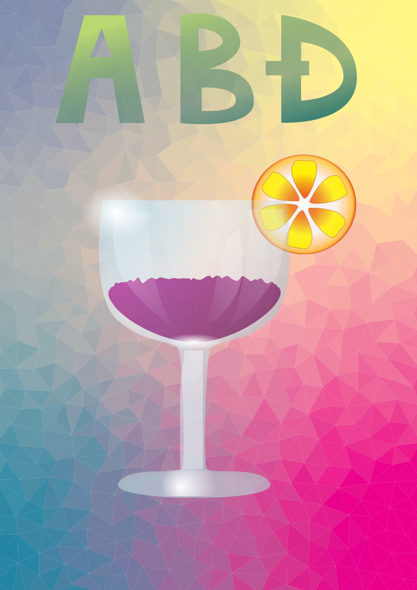
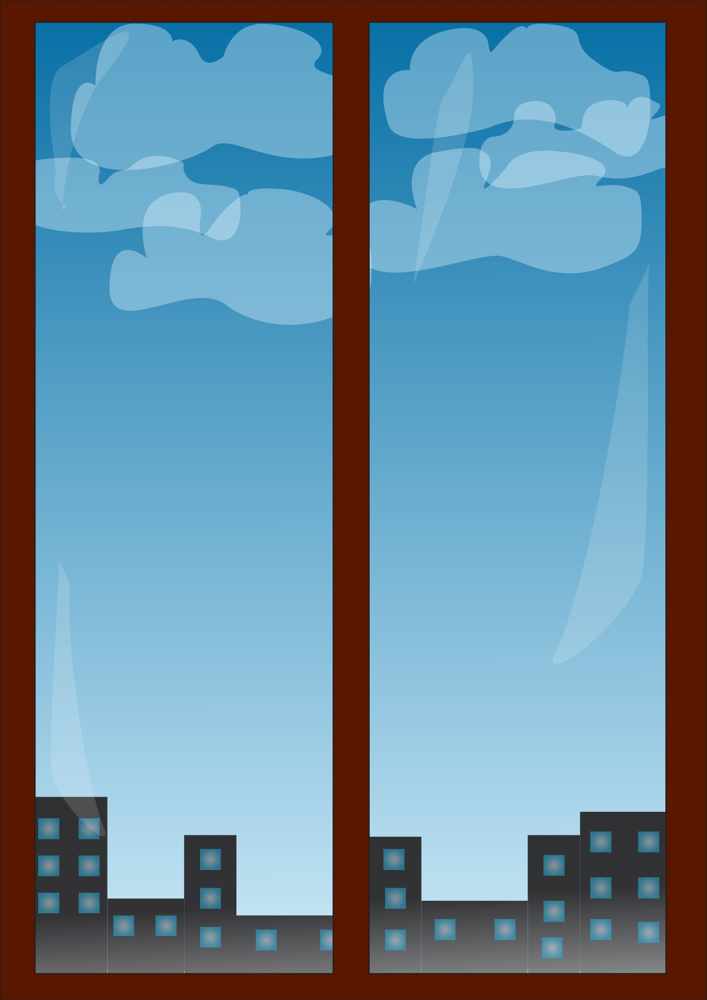
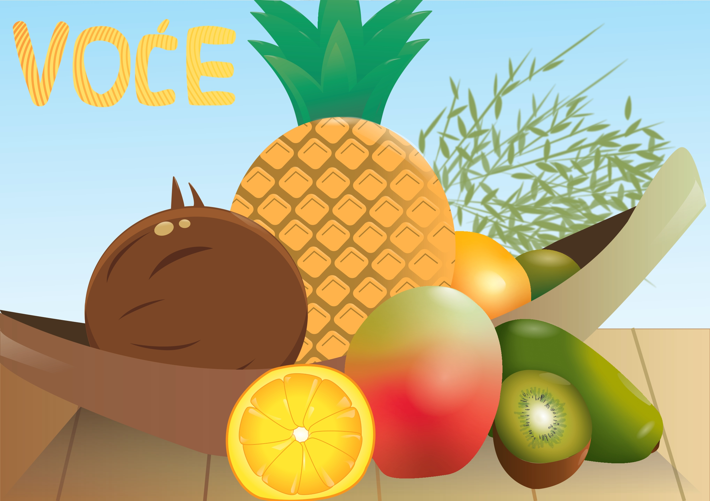

Ova vježba sadržava izradu vlastitog fonta pomoću programa Fontographer / FontForge. Alatom "Pen" pomoću krivulja i linija crtala su se slova našeg imena i prezimena te znakovi hrvatske abecede: Š, š, Č, č, Ć, ć, Đ, đ, Ž, ž
Crtanje Bezierovih krivulja u vektorskim programima u zadanom koordinatnom sustavu pomoću programa Adobe Illustrator / Inkscape. Potrebno je bilo napraviti naše inicijale preko interpolacije Bezierovih krivulja.
U programima Adobe Illustrator / Inkscape izvesti vlastiti primjer sa multipliciranim objektima nacrtanima sa alatom Pen, aplicirati drugačijim bojama kreiranim u novoj Color grupi (Swatch) sa barem pet novih boja.
 Vježba obuhvaća izradu složenih objekata koji se sastoje od više staza metodama spajanja (Unite/Compound path) ili oduzimanja oblika (Difference/Subtract). Obuhvaća i apliciranje različitih vrsta gradijenata (linearni, radijalni, mesh...) od dvije ili više boja te transparenciju i poredak slojeva u izradi složene grafike.
 Kreiranje vlastitog fonta sa slovnim znakovima za riječ "Voće" koristeći alat za crtanje Bezierovih krivulja i primijeniti gradijent boja. U dokumentu veličine A3 u Adobe Illustratoru ili Inkscapeu iscrtati sliku prema zadanom predlošku i uključiti riječ "Voće" koristeći font, uz korištenje svih zadanih elemenata i efekata poput gradijenata, maskiranja i transformacija.
